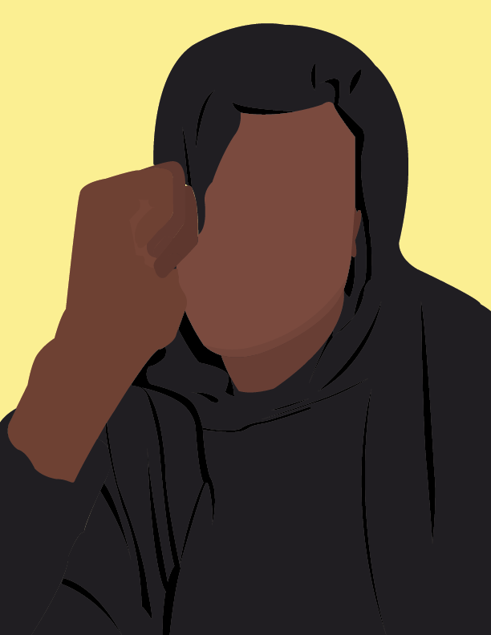

Artist Statement

Design offers a visual solution to problems that arise from the world around us.
The power design possesses has always attracted me to it as a medium as it is
persuasive, direct, and continuously adapting. My work as a designer reflects
my interests as I look to solve problems within the modern world. I often find
myself immersed in color, form, and line with wonder about how design can take
these small elements and create work that has the power to move people to action.
I am declaring a concentration in design and interested in continuing to delve
deeper into design and its problem-solving abilities. The past four semesters of
exploring different types of design whether systems, typography, algorithmic,
and UI design have strengthened my eye and heightened my curiosity. I plan to
continue to take courses in other mediums such as photography and print as I begin
further incorporating these mediums in my work.
I often find myself creating work around the topics of self-awareness, blackness,
and heritage. These themes have slowly crept their way into my design work but
show most prominently in work of other mediums. As I continue to develop with
certain mediums, I am interested in how these topics will shape the art I will create.
With design, my interests are in branding and visual identity which are each a unique
experience as I continue to identify overlaps and differences between these systems.
I plan to continue to take courses that surround these subjects both in visual arts
and marketing which will strengthen my design skills and process as I continue to
search deeper into the many facets of design.